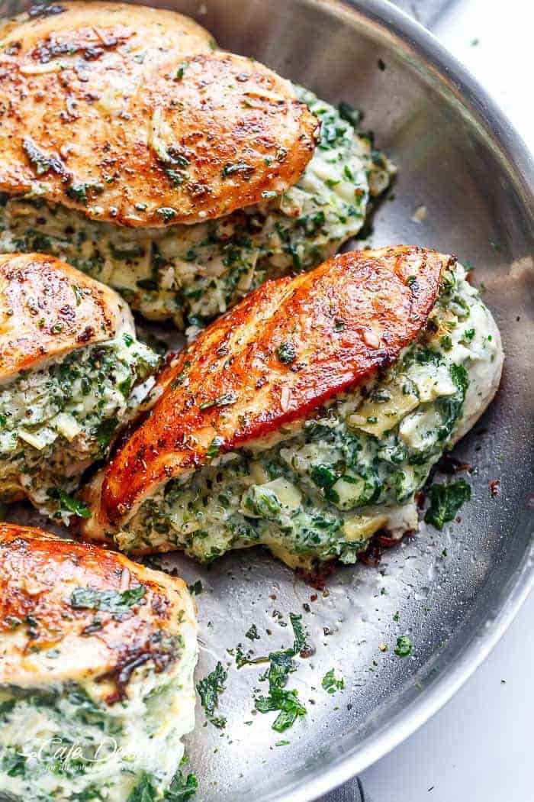

Home
Stuffed Chicken Breast

Ingredients
- Chicken Breasts
- Provolone Cheese
- Spinach
- Minced Garlic
- Seasonings to taste
- Olive Oil
Directions
- Preheat the oven to 425 degrees.
- In a large frying pan add the Olive Oil and Garlic, sauté over medium heat for 1-2 minutes.
- Add the Spinach and cook until Spinach is wilted, about 2-3 minutes.
- Butterfly the chicken breasts and lay them out flat on the cutting board.
- Place a slice or two of Provolone cheese over each chicken breast. Add Spinach and garlic on
top of the cheese.
- Fold the chicken in half over the stuffing, being careful to keep the filling from spilling out.
- Place the breasts on a greased baking dish and season the chicken however you like. Bake uncovered
for 30 Minutes or until the internal temperature reaches 165 F.